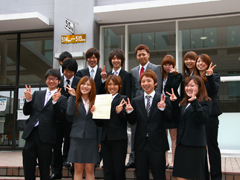
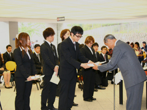
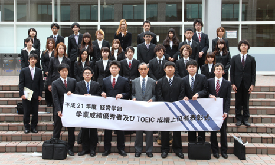

成績優秀者表彰式
平成21年度成績優秀者表彰
平成21年度学業成績優秀者およびＴＯＥＩＣ成績上位者表彰式が行われました
平成22年5月26日（水）に、平成21年度学業成績優秀者およびＴＯＥＩＣ成績上位者表彰式が行われ、成績が特に優秀であった学生に、表彰状・記念盾・奨励金が授与されました。
当日は、学業成績優秀者30名のうち28名、ＴＯＥＩＣ成績上位者4名のうち3名が表彰式に出席しました。
吉冨学部長からのお祝いの言葉の後、一人ずつ表彰状・記念盾・奨励金が手渡され、表彰式に集まった多くの経営学部教員、学生からあたたかい祝福の拍手を受けました。
経営学部生のみなさんの更なる飛躍を心より願っております。


